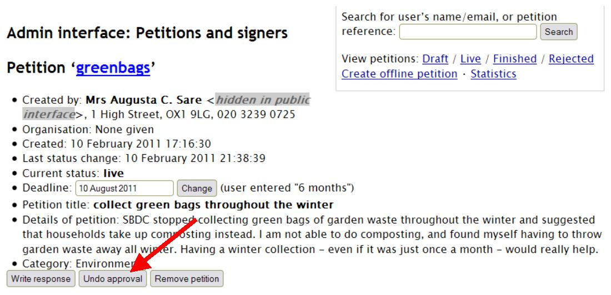
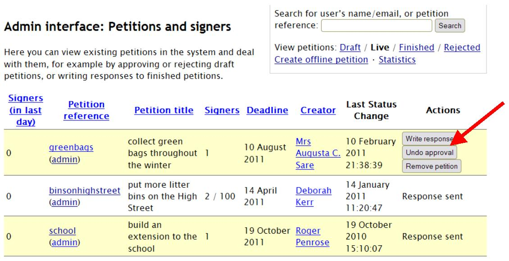
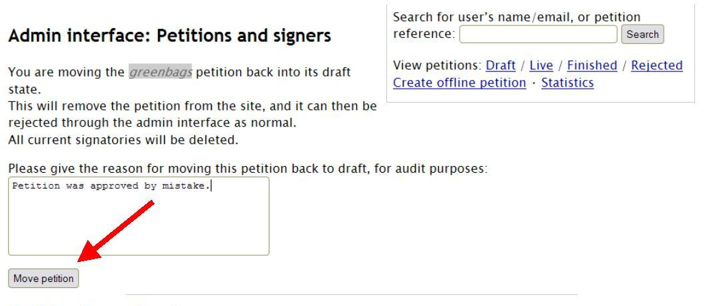

To undo the approval of a petition
If a petition has been approved accidentally, it is possible to ‘unapprove’ it, and move it back into Draft status (and from there, reject it).
The approved petition will be listed under Live petitions in the admin interface. You can find the ‘Undo approval’ button on the admin page for a particular petition:
or under ‘Actions’ on the list of Live petitions (note: if a petition has had a response sent to it, then the ‘Actions’ column will read ‘Response sent’ and there will be no buttons under ‘Actions’. You can, however, find these buttons on the admin page for that petition regardless of whether a response has been sent or not):
Clicking on either ‘Undo approval’ button will take you to the same page, where you will be asked to give a reason why the petition is being unapproved. Once you have noted the reason, click the ‘Move petition’ button – this will return the petition to Draft status and allow you to reject it (or, if need be, approve it again):
At this point, the petition reverts back to Draft status and is no longer available on the public website. Any existing signatures will be deleted. The reason given for unapproval is automatically logged under ‘Administrator events and notes’ on the admin page for that petition.
NOTE: petition creators are NOT automatically emailed if an approved petition is subsequently unapproved. For this reason, it is imperative that you contact the petition creator directly, using the email address or telephone number that they have supplied, in order to explain the situation, avoid confusion and demonstrate the council’s transparency.